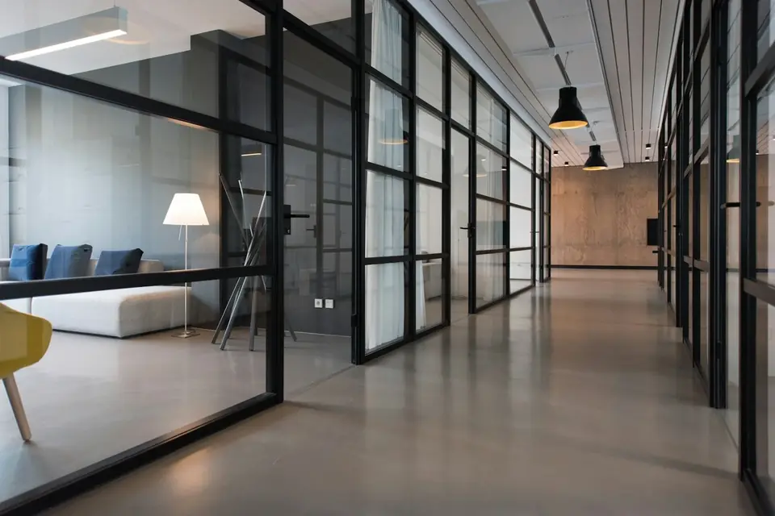

Würzburg und Umgebung
Glasreinigung in Würzburg
Klare Sicht nach draußen und ein glänzender erster Eindruck. Wir reinigen Fenster und Glasflächen in Büros, Praxen, Läden und Wohnanlagen.
Glas zeigt jeden Fingerabdruck
Große Fensterfronten, Glastüren und gläserne Trennwände wirken modern und hell, solange sie sauber sind. Fingerabdrücke, Regenspuren und Staub sieht man darauf allerdings sofort, vor allem wenn die Sonne tief steht. Deshalb lohnt sich eine regelmäßige Glasreinigung.
Damit keine Schlieren zurückbleiben, kommt es auf das richtige Werkzeug und die richtige Reihenfolge an. Rahmen, Falze und Fensterbänke nehmen wir auf Wunsch mit, denn ein sauberes Glas in einem verstaubten Rahmen sieht nur halb so gut aus.
Saubere Fenster haben auch einen praktischen Nutzen: Es kommt spürbar mehr Tageslicht in die Räume. Und bei Schaufenstern und Eingangstüren entscheidet die Glasfläche oft darüber, ob jemand hereinkommt oder weitergeht.

Das gehört zur Glasreinigung
Welche Flächen innen und außen gereinigt werden, legen wir vorab fest. Bei Außenflächen in großer Höhe klären wir offen, was sicher erreichbar ist und was nicht.
- Fenster innen und außen
- Rahmen, Falze und Fensterbänke
- Glastüren und Eingangsbereiche
- Glastrennwände in Büros
- Schaufenster und Vitrinen
- Spiegel und Glasflächen im Innenraum
Gut zu wissen
Regelmäßig oder einmalig
Fenster lassen sich in festen Abständen reinigen, Schaufenster meist deutlich öfter. Auch ein einzelner Termin ist möglich.
Vorab geklärt
Höhe, Zugang und Anzahl der Flächen besprechen wir vor dem Termin. So wissen Sie genau, was gereinigt wird.
Kombinierbar
Die Glasreinigung lässt sich mit der Unterhaltsreinigung verbinden. Dann haben Sie für Böden, Flächen und Fenster einen Ansprechpartner.
Was Sie vor einer Glasreinigung klären sollten
Für ein genaues Angebot ist die Zahl der Fenster und Glasflächen der wichtigste Punkt. Zählen Sie am besten die Fensterflügel, nicht nur die Fenster, und notieren Sie, ob es Sprossen, Oberlichter oder sehr große Scheiben gibt. Fotos von Fassade und Innenräumen helfen bei der Einschätzung und ersparen oft einen zusätzlichen Termin.
Klären Sie außerdem, wie die Außenseiten erreichbar sind. Fenster, die sich öffnen oder kippen lassen, sind meist unkompliziert. Feste Verglasungen in den oberen Etagen oder über einem Vordach brauchen dagegen eine andere Lösung. Was sicher erreichbar ist, besprechen wir vorab offen mit Ihnen.
Planen Sie die Reinigung möglichst zu einer Zeit, in der die Räume gut zugänglich sind. Pflanzen, Deko und Gegenstände auf den Fensterbänken sollten vorher zur Seite geräumt werden, damit Rahmen und Bänke vollständig gereinigt werden können. Und noch ein Tipp: Wer Fenster und Rahmen regelmäßig reinigen lässt, verhindert, dass sich Schmutz und Ablagerungen festsetzen. Das schont Dichtungen und Oberflächen.
Fragen zur Glasreinigung
Ihre Frage zur Glasreinigung ist nicht dabei? Dann rufen Sie an oder lesen Sie die häufigen Fragen zur Gebäudereinigung.
Weitere Leistungen
Wie oft sollten Fenster gereinigt werden?
Für Büros und Praxen sind einige Reinigungen im Jahr üblich. Schaufenster und Eingangstüren, die viele Menschen berühren, brauchen meist häufiger eine Reinigung.
Was passiert bei Regen?
Für die Innenseite spielt das Wetter keine Rolle. Ist für Außenflächen starker Regen angesagt, stimmen wir einen neuen Termin mit Ihnen ab.
Reinigen Sie auch Fenster in Privatwohnungen?
Unser Schwerpunkt sind gewerbliche Objekte und Wohnanlagen. Fragen Sie gern an, wenn es um eine Wohnung geht.